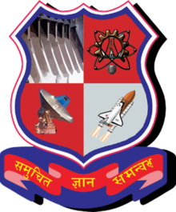

2017 —
2019
2019
M.Tech. in Water Resources Engineering
8.90 / 10 CGPA
2012 —
2016
2016
B.E. in Civil Engineering
Shree Swami Atmanand Saraswati Institute of Technology, affiliated to GTU
8.83 / 10 CGPA
